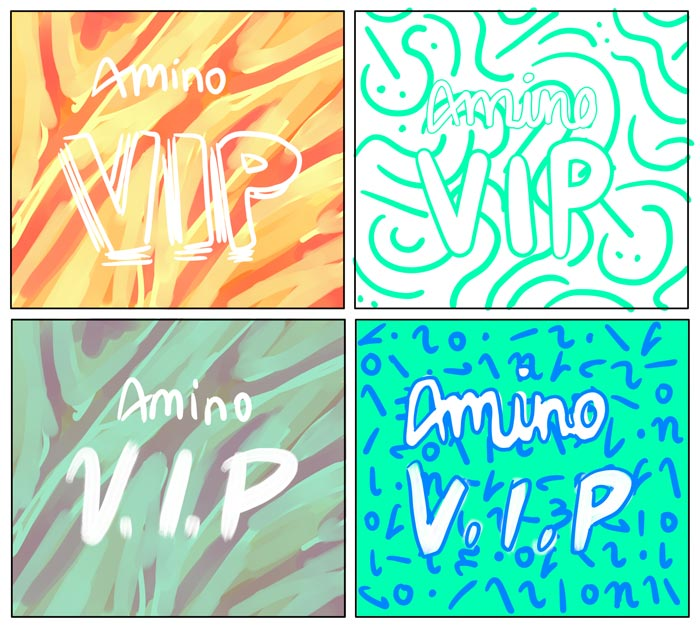
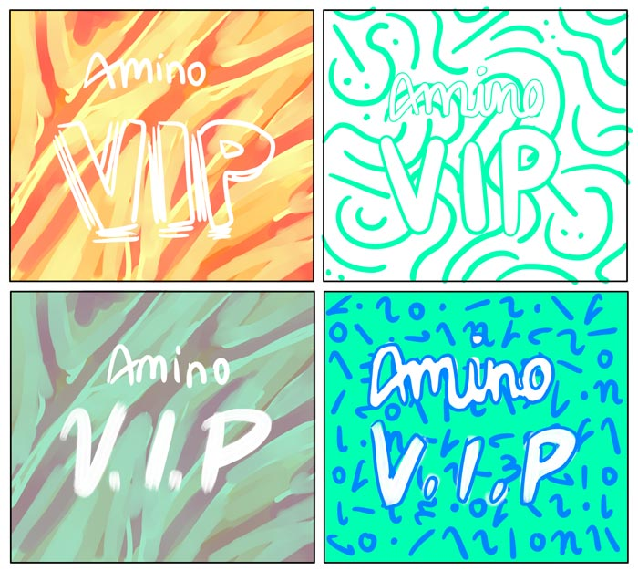
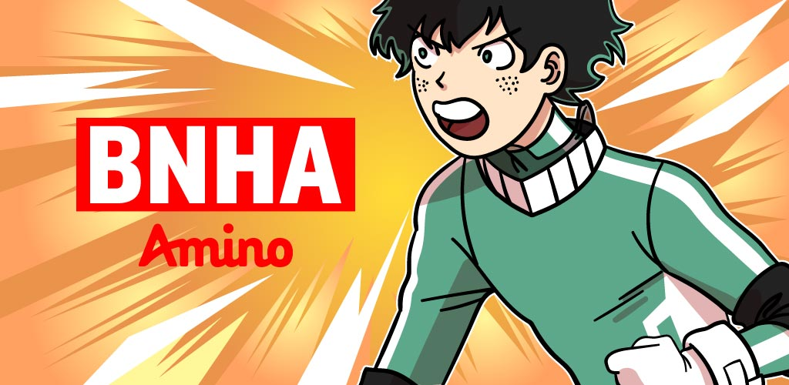
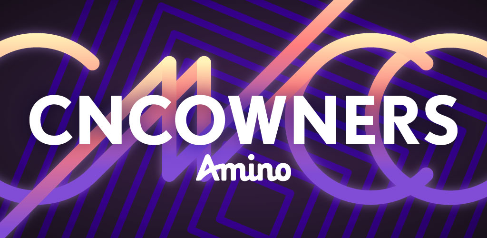
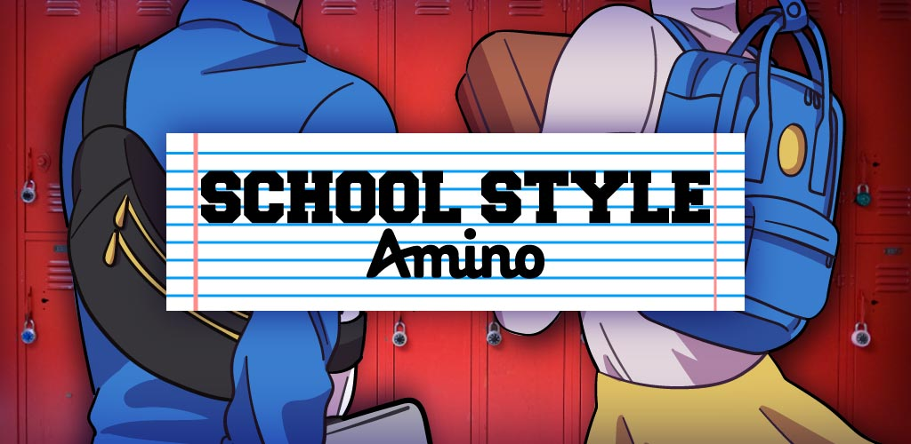
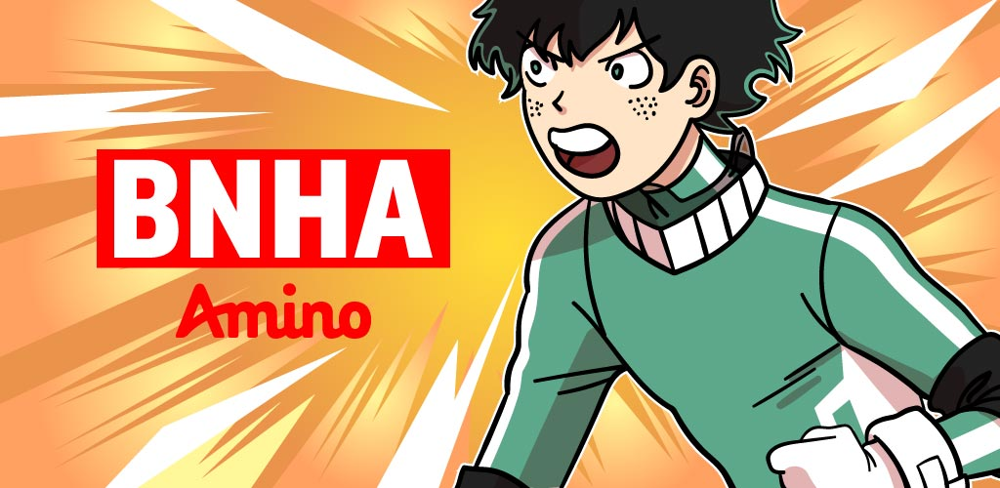
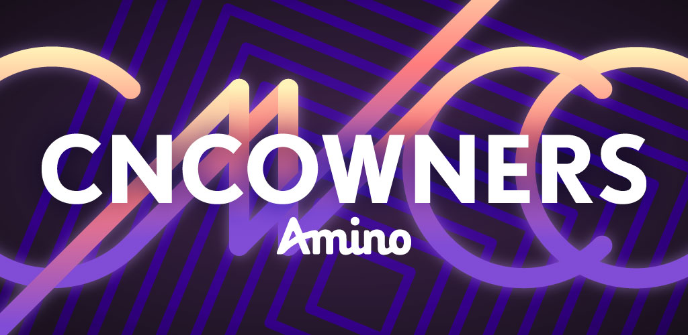
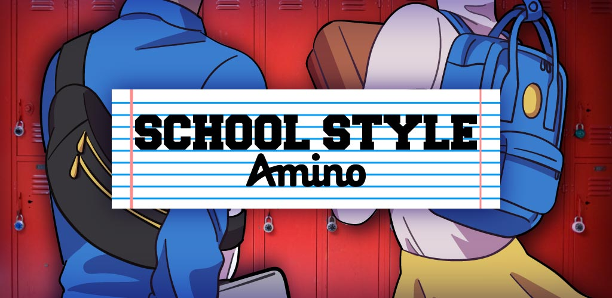

Amino Design (UNDER CONSTRUCTION)
Skills: Graphic design, illustration, branding, UI design
Tools: Illustrator, Photoshop
As Design Intern at Amino, I had the incredible opportunity to work with different teams on a variety of campaigns. You can jump to each of the projects below:
Amino VIP // Master App // Mobile Assets
Amino VIP (top)
I assisted the Community teams with the brand design for the Amino VIP community. While “VIP” sounds exclusive, the Community teams wanted to make clear that Amino VIP was completely inclusive. Although made for active leaders making waves in their respective Amino, VIP is no secret and serves as an incentive for leaders to be more proactive in their roles. The VIP Amino is a space for awesome community leaders to interact and share ideas. Thus, the purpose of the design for Amino VIP was to create a refined but approachable visual style.
 

After making several thematic boards featuring various styles, the Community teams preferred a minimal aesthetic with limited colors and simple shapes. I initially considered making organic and abstract shapes, but since the brand sought a more polished look, we decided to go with basic shapes derived from the letters in “VIP.” I paired this with the pink, yellow, blue, and navy swatches we use in other company materials. Although these components seem simple, the shapes and colors can be combined in infinite ways which complement the esteemed but fun character of Amino VIP.
The following are the "Amino VIP" logo, icons that come in 16 varieties using the set color combinations, and backgrounds that can implement the different shapes.

Master App (top)
I helped the CEO launch new screens for Amino Master, the company's primary app where millions of users create and join communities geared towards a variety of interests. It had been over a year since Amino's screenshots had been updated in the App Store and Google Play Store so I had the opportunity remark the screenshots, which can currently be seen in the App Store and Google Play Store.
In addition to the new screens, during my internship Amino was in the midst of rebranding and considering possible creative directions to take for its mobile and web platforms. Thus, I had the chance to contribute to its visual restructuring by creating graphics and patterns for Amino's announcements and social platforms. The pattern is based on the letters which compose Amino's logo and the color scheme is based on the company's most used colors.

Mobile Assets (top)
I was responsible for creating hundreds of designs for Amino's standalone apps (across different languages), hundreds of Facebook and Instagram ads, and countless other design assets for the Amino team. Below you can see some of the icons, feature graphics, and illustrations I made during my internship:
 




